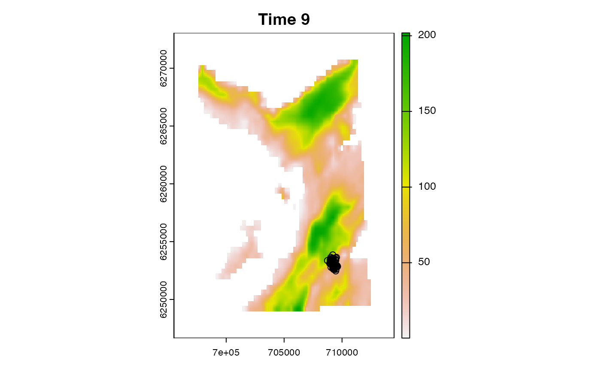
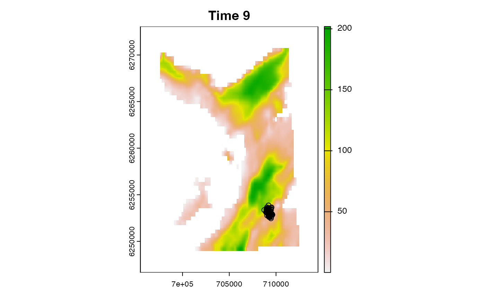
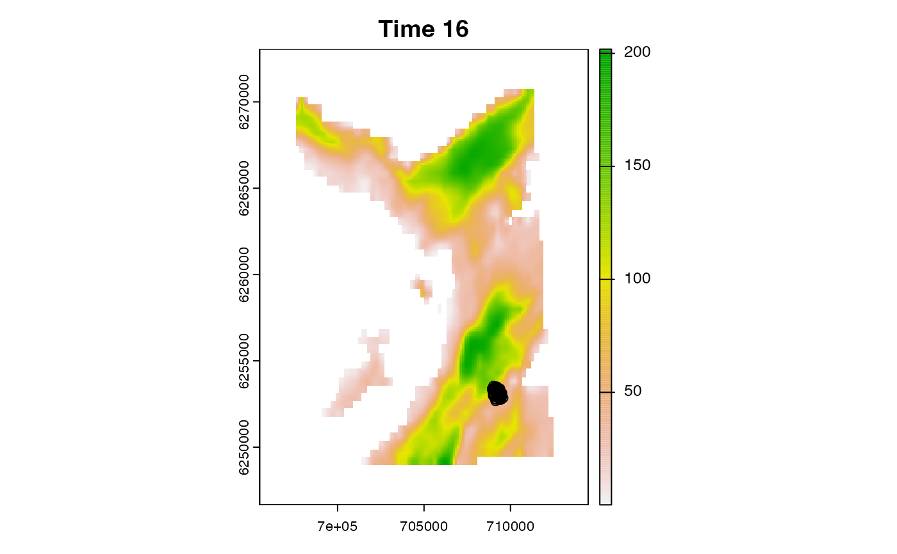
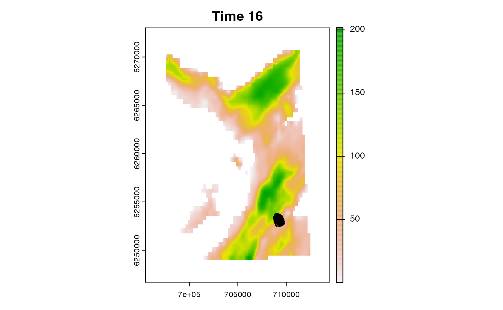
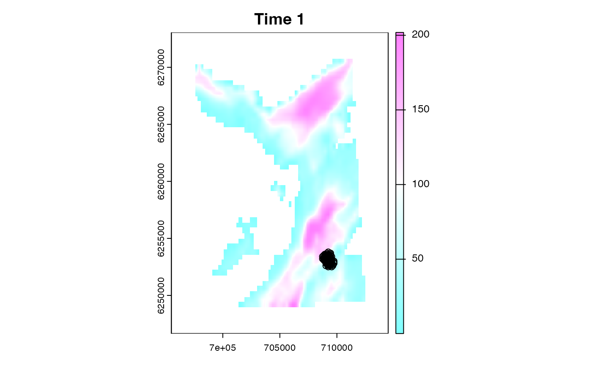
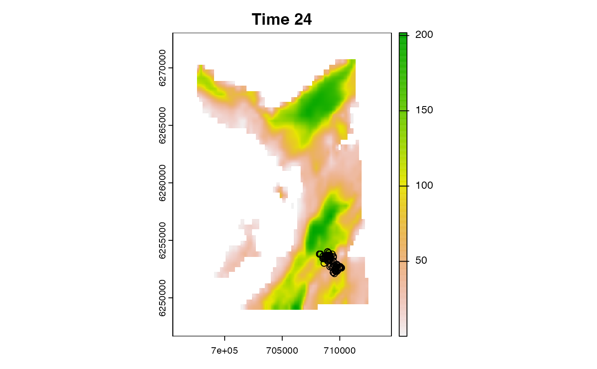
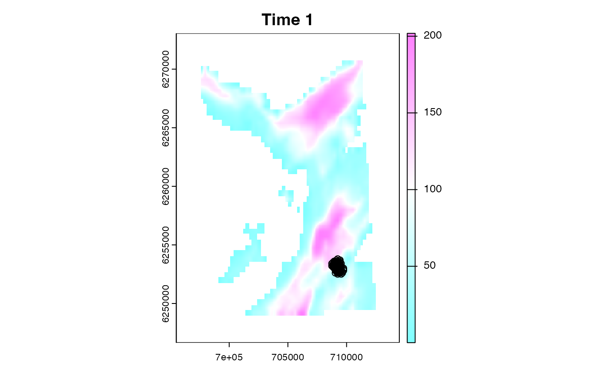
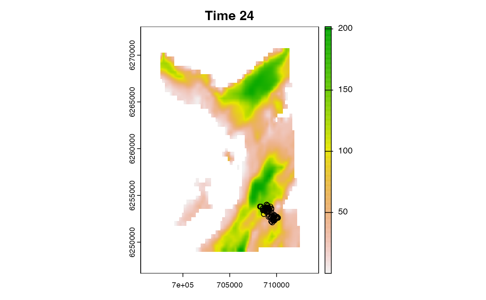

This function maps particle histories for selected time steps or entire time series and can be used to create animations.
Arguments
- .dlist
A named
listof data and parameters frompat_setup_data(). This function requires:.dlist$spatial$bathy, which defines the grid onto which particle samples are mapped;
- .forward
Particle samples, provided in any format accepted by
.pf_history_list(). Particle samples should be frompf_forward()if.backwardis supplied.cell_now,x_nowandy_nowcolumns are required.- .backward
(optional) If .
forwardcontains particle samples from the forward run,.backwardcan contain particle samples from the backward pass (e.g.,pf_backward_killer()), provided in any format accepted by.pf_history_list(). Thecell_nowcolumn is required.- .steps
NULLor anintegervector of the time steps for which to map particle samples.NULLspecifies all time steps.- .png
(optional) A named
list, passed togrDevices::png(), to save plots to file.filenameshould be the directory in which to write files. Files are named{.steps[1]}.png, {.steps[2]}.png, ..., {.steps[N]}.png..pngshould be supplied if.clis supplied via....- .add_surface, .add_forward
Named
lists for plot customisation..add_surfaceis passed toterra::plot(), excludingxandmain..add_forwardis passed tographics::points(), excludingxandy.
- .add_layer
(optional) A
functionused to add additional layer(s) to the plot. The function must a single (unnamed)integervalue for the time step (even if ignored). An example function isfunction(...) points(x, y)wherexandyare (for example) receiver coordinates.- .prompt
A
logicalvariable that defines whether or not to prompt the user for input between plots. This is only used in interactive mode if.png = NULL(and there are multiple time steps).- ...
Additional argument(s) passed to
cl_lapply(), such as.cl.
Value
The function is called for its side effects. It returns invisible(TRUE).
Details
For each .step, terra::plot() is used to plot .dlist$spatial$bathy. Particle samples in .forward are added onto the grid via graphics::points(). If .backward is supplied, particles in .forward should be derived from the forward run. Particles in .forward but not .backward (i.e., dead ends) are shown in red (unless .add_forward$col is overridden).
Warning
This function plots all particles, irrespective of their weights.
See also
The forward filtering--backward sampling algorithm samples locations (particles) that represent the possible locations of an individual through time, accounting for all data and the individual's movement.
To set up data, use
pat_setup_data().pf_forward()implements the forward filter:To set up an observations timeline, use
pf_setup_obs().For proposal (movement) models, see
pf_propose.For likelihood functions, to evaluate the likelihood of the data at proposal locations, see
pf_lik.For sampling functions, to (re)sample plausible proposal locations, see
pf_sample.For tuning parameters, see
pf_opt.
pf_backward_*()refines outputs from the forward filter:pf_backward_killer()removes dead-ends;pf_backward_sampler_*()implements the backward sampler;
To reconstruct movement paths from particle samples, use
pf_path().To map emergent patterns of space use, use
pf_coord()plus amap_*()function, such asmap_pou(),map_dens()and/ormap_hr_().For additional utilities, see supporting
pf_*()functions, such aspf_files(),pf_files_size(),pf_plot_history(),pf_diag_convergence()andpf_diag_summary().
Examples
#### Set up
# Define directories
con <- file.path(tempdir(), "patter")
frames <- file.path(con, "frame")
mp4s <- file.path(con, "mp4")
dir.create(frames, recursive = TRUE)
dir.create(mp4s, recursive = TRUE)
# Define data list
dlist <- dat_dlist()
#### Example (1): Plot selected samples (from the forward run)
# Particles can be provided in any format accepted by `?.pf_history_list()`
# Here, we use precomputed samples:
# * Use particles in memory
pf_plot_history(.dlist = dlist,
.forward = dat_pff(),
.steps = 1L)
# * Use the `history` list directly
pf_plot_history(.dlist = dlist,
.forward = dat_pff()$history,
.steps = 1L)
# * Use a directory
pf_plot_history(.dlist = dlist,
.forward = dat_pff_src(),
.steps = 1L)
# * Use a list of files
pf_plot_history(.dlist = dlist,
.forward = pf_files(dat_pff_src()),
.steps = 1L)
#### Example (2): Plot selected samples (from the backward pass)
pf_plot_history(.dlist = dlist,
.forward = dat_pff(),
.steps = 1L)
#### Example (3) Plot particles from both forward and backward runs
# (TO REVISE)
#### Example (4): Plot multiple time steps
# Specify selected steps
pf_plot_history(.dlist = dlist,
.forward = dat_pff(),
.steps = 1:5L)
 # Plot all steps (default: .step = NULL)
pf_plot_history(.dlist = dlist,
.forward = dat_pff())

# Plot all steps (default: .step = NULL)
pf_plot_history(.dlist = dlist,
.forward = dat_pff())

 # Use `.prompt = TRUE`
pf_plot_history(.dlist = dlist,
.forward = dat_pff(),
.prompt = TRUE)
# Use `.prompt = TRUE`
pf_plot_history(.dlist = dlist,
.forward = dat_pff(),
.prompt = TRUE)

 

 #### Example (5): Customise the plot
# Customise the SpatRaster surface
pf_plot_history(.dlist = dlist,
.forward = dat_pff(),
.steps = 1L,
.add_surface = list(col = grDevices::cm.colors(256)))

# Customise the particle samples
pf_plot_history(.dlist = dlist,
.forward = dat_pff(),
.steps = 1L,
.add_forward = list(pch = ".", col = "blue"))

#### Example (6): Write images to file
pf_plot_history(.dlist = dlist,
.forward = dat_pff(),
.add_forward = list(pch = 21, cex = 0.5),
.png = list(filename = frames))
#### Example (7): make animations
if (rlang::is_installed("av")) {
# There are lots of tools to create animations:
# * `av::av_encode_video()` # uses ffmpeg
# * `animation::saveVideo()` # uses ffmpeg
# * `magick::image_write_video()` # wraps av()
# * `glatos::make_video()` # wraps av()
# Helper function to open (mp4) files
Sys.open <- function(.file) {
if (.Platform$OS.type == "Windows") {
cmd <- paste("start", shQuote(.file))
} else {
cmd <- paste("open", shQuote(.file))
}
system(cmd)
}
# Use av::av_encode_video()
# * This is one of the faster options
input <- unlist(pf_files(frames))
output <- file.path(mp4s, "ani.mp4")
av::av_encode_video(input, output, framerate = 10)
# Sys.open(output)
}
#> [1] "/var/folders/nl/ygb3g6tj24z06jddbqqhj6hw0000gn/T//Rtmp6gn8HN/patter/mp4/ani.mp4"
# Clean up
unlink(con, recursive = TRUE)
#### Example (5): Customise the plot
# Customise the SpatRaster surface
pf_plot_history(.dlist = dlist,
.forward = dat_pff(),
.steps = 1L,
.add_surface = list(col = grDevices::cm.colors(256)))

# Customise the particle samples
pf_plot_history(.dlist = dlist,
.forward = dat_pff(),
.steps = 1L,
.add_forward = list(pch = ".", col = "blue"))

#### Example (6): Write images to file
pf_plot_history(.dlist = dlist,
.forward = dat_pff(),
.add_forward = list(pch = 21, cex = 0.5),
.png = list(filename = frames))
#### Example (7): make animations
if (rlang::is_installed("av")) {
# There are lots of tools to create animations:
# * `av::av_encode_video()` # uses ffmpeg
# * `animation::saveVideo()` # uses ffmpeg
# * `magick::image_write_video()` # wraps av()
# * `glatos::make_video()` # wraps av()
# Helper function to open (mp4) files
Sys.open <- function(.file) {
if (.Platform$OS.type == "Windows") {
cmd <- paste("start", shQuote(.file))
} else {
cmd <- paste("open", shQuote(.file))
}
system(cmd)
}
# Use av::av_encode_video()
# * This is one of the faster options
input <- unlist(pf_files(frames))
output <- file.path(mp4s, "ani.mp4")
av::av_encode_video(input, output, framerate = 10)
# Sys.open(output)
}
#> [1] "/var/folders/nl/ygb3g6tj24z06jddbqqhj6hw0000gn/T//Rtmp6gn8HN/patter/mp4/ani.mp4"
# Clean up
unlink(con, recursive = TRUE)